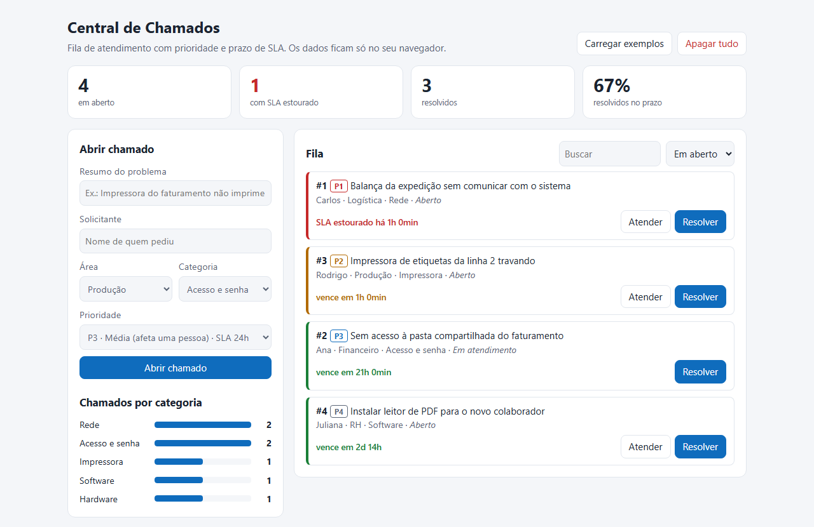

Central de Chamados
- Problema
- Numa fila de suporte, o chamado que vai estourar o prazo se perde no meio dos outros.
- Solução
- Fila ordenada por quem vence primeiro, SLA por prioridade (4 h a 72 h) com alerta em amarelo e vermelho, e indicadores de SLA cumprido.